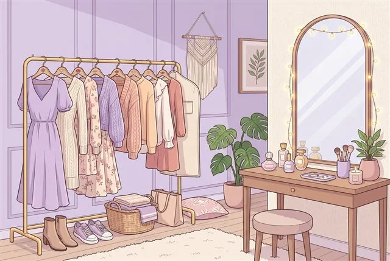
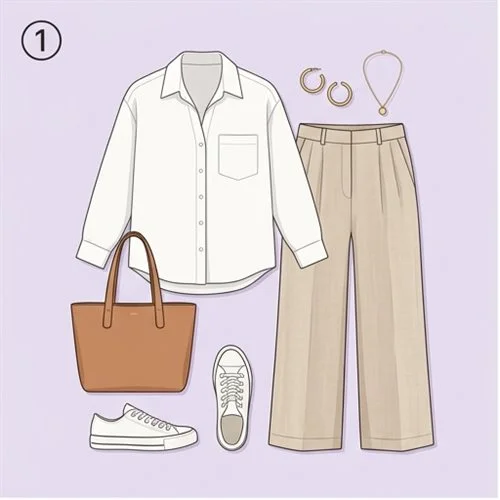

퍼스널 무드 & 쇼핑 가이드
나에게 어울리는 스타일은?
12문항으로 찾는 인생 코디 룩과 찰떡 헤어스타일 추천
테스트 안내
평소 내가 가장 편안하게 느끼는 취향과 외출할 때 선호하는 분위기를 솔직하게 골라주세요!
스타일링 취향
Q1 / 12
질문 내용이 여기에 표시됩니다.
퍼스널 무드와 실루엣을 분석하고 있어요
나를 가장 돋보이게 할 패션 & 헤어 찾는 중...
TYPE 01
내추럴 꾸안꾸 놈코어룩

한줄 요약이 여기에 표시됩니다.
추천 패션 아이템 조합
나에게 착붙인 헤어 & 메이크업
베스트 컬러
-
피해야 할 워스트
-
내 스타일에 딱 맞는 추천 패션템
이 포스팅은 쿠팡 파트너스 활동의 일환으로, 이에 따른 일정액의 수수료를 제공받습니다.
참여자 실시간 톡 & 스타일 팁
내 진단 결과와 유용한 코디 팁을 나눠보세요